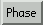
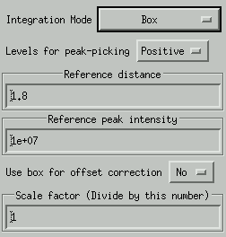
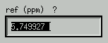

2D NMR
Index
The 2D buttons
This block of button is made active when a multi dimensional NMR file
is loaded.
Toggle between 1D mode and 2D mode
PL 2D - 2D plot
In this mode (the default mode) the intensity of each points is represented
by a colored box. If only positive intensities are plotted, the color
scale is from red (low intensity) to blue (high intensity). if only negative
intensities are drawn, the color scale is reversed (blue is low intensity
and red corresponds to high intensity). When both positive and negative
intensities are drawn, the color scale is split in two. The positive intensities
range from red to yellow green, and the negative intensities from blue to
blue green. Use the
button (positive + negative contour levels) to select positive
, or negative
contour levels. The spectrum has to re-plotted after a change in level-mode.
Standard 2D plot with super imposed 1D track.
With the  and
buttons, the lowest level can be selected. Down always means
'go to zero'. Thus the lowest level is always given as an absolute value.
and
buttons, the lowest level can be selected. Down always means
'go to zero'. Thus the lowest level is always given as an absolute value.
For 3D files, one can use the plane up
and plane down
to go one plane up or down. The buttons
and
, are for undoing and redoing the selection of a plane.
With the
option of the mouse, one can select specific 1D spectra from the
2D spectrum. The row or column that has been selected is indicated by
a dotted line, and the 1D spectrum is plotted on top of the 2D spectrum.
There are three selection modes. With
, rows (spectra parallel to the X axis) are selected. With
, columns (spectra parallel to the Y axis) are selected, and with
, both rows and columns are selected . With the  buttons, one can select the next or the previous 1D spectrum.
are the Undo and Redo buttons for the record section.
'Undo' button, one can undo the previous 1D spectrum selection.
With the 'Redo' button, the spectrum is selected again.
buttons, one can select the next or the previous 1D spectrum.
are the Undo and Redo buttons for the record section.
'Undo' button, one can undo the previous 1D spectrum selection.
With the 'Redo' button, the spectrum is selected again.
Select Sum rows/columns
To select an accumulation of rows or columns, use the
Mouse Option. When the left mouse button is pressed, it indicates
the first of the rows (or columns) and when the left mouse botton is released,
this marks the last row (or column). The rows (or columns) are now accumulated,
and displayed as one track. The first and last row (or column) are both
marked with a dotted line.
Crop/UCrop - Crop and Un-crop
CP - Contour Plot
This
CP = 'Coutour Plot' button option renders the spectrum as a contour
plot, or uses the colored block representation, depending on the position
of th CPM = 'Contour Plot Mode' button.
= Colored blocks,
= Contour Plot, and
= Contour Plot without skipping channels, no matter the X-and Y increment
values..
Contour plot with super imposed 1D track. The contour parameters can
be modified with the contour parameter popup, that can be activated via
the menu items 'Param' -> 'Contour
Parameters'. The first part enables you to do manually, what the 'crop'
option does interactively. It selects which part of the spectrum to display.
With the X and Y increment, channels can be skipped for faster contouring.
An increment of 1 means, use all channels, 2 means skip one channel out
of two, etc.
The rest of the options define the contour levels.
- Level mode:
- Explicit- Explicitly define each level. If this option is selected,
the user is asked to specify these levels, when the contour parameter popup
is closed.
- Use factor - Use the factor given in the 'Factor for Use factor
mode' box. The next level is computed by 'factor * previous level', starting
at the lowest level.
- Equidistant - Use the distance given in the 'Distance for Equidistant
mode' box. The next level is computed by 'distance + previous level', starting
at the lowest level.
- Log-range - Calculate a range of levels, positioned at a logarithmic
distance, from the lowest level to the level specified in 'Highest level
for Log-range mode'.
- Level colors:
- All levels same color - One color mode.
- Pos/Neg levels - Two color mode. Plot the positive and negative
levels each in their own color.
- Automatic - Assign each level its own color.
- Show levels :
- Positive - Calculate only positive levels.
- Positive and negative - Calculate positive and negative levels.
- Negative - Calculate only negative levels.
- Number of levels: The number of levels to calculate. When 'Show
levels' is 'Positive and negative' half of this number is drawn positive
and the other half negative.
Phase - 2D Phase
The 
button enters the 2D phase mode. The screen shows four regions. Region
one is the original 2D spectrum, and the other three are initially empty,
but are intended towill contain 1D spectra that are simultaneously submitted
to the phase procedure.
Screen split up in 2D phase mode. Three of the regions have a green
border, and one has a red border. This last one is connected to
the scroll bars when the zoom options is active.
To place spectra into the three 1D regions, one first has to select
appropriate spectra. This is done by using the bookmark option.

After three spectra have been selected, select one of those and press
one of the 'Add to PhaseBlock' buttons. When the first spectrum is added,
a number of options can be set.
- Pre-run AU command on data - The first option asks if the
AU command should be run on each spectrum. This can be useful if unprocessed
data is loaded. For example, a Window and a Fourier transformation can
be performed before spectra are loaded.
- Reset phase parameters - This option asks if the phase
parameters should be reset. The answer is yes, unless previous phase parameters
are applied with the AU command..
- Use Hilbert transformation - Use this option if there are only
real data (imaginary data are zero). This option will restore the imaginary
points, using a Hilbert transformation.
After the 1D spectra are loaded into the regions, one can zoom in on
the most interesting parts of the spectra. When the zoom option is active,
the appropriate viewports (=regions) are activated automatically. One
does not have to use the 'Select viewport' buttons. After this, use the
normal phase procedures. All spectra will be phased simultaneously. When
done, press the 'Phase' button again, and you are back in the normal 2D
mode.
Integration
When the 'Integrate' option of the mouse-popup is selected,
the cursor can be used to select a region (peak) that will be integrated.
Alternatively, the peakpick routine can
be used. However, this routine only selects non-overlapping peaks, or
sees overlapping peaks as one peak. There are tree integration modes.
In the first mode (box mode) a green box marks the area that is integrated.
In the second mode, floodfill mode, the whole area inside the lowest contour
line is integrated. The last mode (convex floodfill) is an extension of
the floodfill mode. All dents and holes in the area, marked by floodfill,
are filled.
Box integration. The whole area inside the box will be integrated.
Flood-fill integration. Only the area inside the closed contour lines
(marked with green squares) will be integrated.
Convex flood-fill integration. Same as flood-fill integration, only
the integration area is made convex (Well, not really convex, but all holes
and dents are filled).
Integration 2D options
Get popup menu via Utilities->Integration 2D options

- Integration Mode:
- Box
- Flood-fill
- Convex flood-fill
- Levels for peak-picking
- Reference distance
- Reference peak intensity -A distance (R) is calculated as:
reference_distance * (reference_peak_intensity ^ 1/6) / ( peak_intensity
^ 1/6 )
- Use box for offset correction
- If this option is set to 'Yes' the border values of the selected region
are considered the offset and subtracted from the total intensity.
Integration 2D bookkeeping
Get popup menu via Utilities->Integration 2D
Add - Add the last integration box to the list. Peaks are
marked AA, AB, ... ZZ.
Edit - Edit the selected integration box . The numbers
are the left, right, bottom and top channel numbers. An optional user
label can be added.
Remove - Remove the selected integration box from the list.
Reset - Remove all integration boxes from the list.
Plot - Redraw all integration boxes.
Hide - Hide the integration boxes.
Show - Undo the hide operation.
Read - Read integrals from a file that was created with the
write command.
Write - Write the box coordinates of the integrals, and the
corresponding labels, to file.
Grab Mouse Integrate - Set left mouse button in the 2D integration
mode. The area, that is selected with the mouse, is put into a box and
integrated. However, it is not added to the list of peaks. This must
be done manually with the 'Add' button.
Grab Mouse Peak Pick - Set left mouse button in the 2D peak-pick
mode.
The area, that is selected with the mouse, is put into a box and
integrated. However, it is not added to the list of peaks. This must
be done manually with the 'Add' button.
Grab Mouse Peak Pick - Set left mouse button in the 2D peak-pick
mode. 
- Peak Pick Find - Find all peaks
within the area selected with the mouse. The routine looks for closed contours
on the lowest contour level. Positive or negative peaks are selected, based
on the selection made in 'Integration
2D options'
- Peak Pick Remove - Remove all existing peaks inside the region
that was selected with the mouse.
- Peak Pick Merge - Merge the two peaks (inside the region selected
with the mouse) into one peak.
Print Integrals - Print the integrals from the list with label,
box coordinates and intensities.
Print Integral + Reference - A distance (R) is calculated as:
reference_distance * (reference_peak_intensity ^ 1/6) / ( peak_intensity
^ 1/6 )
Print Peak Center - Prints max-intensity-position.
Re-calculate Integrals - Use this option after the 'offset correction' mode has been changed.
Options - Popup ''Integration 2D options' .
Edit peak borders and user-label.
Calibrate
To calibrate a 2D spectrum, first select from the mouse menu the function
'Calibrate'  . Then select a reference peak in the 2D spectrum
. Then select a reference peak in the 2D spectrum
Now press mouse button 1. Two dialog boxes appear one after the other.
In the first one you can set the calibration value for the X axis, and
in the second on the calibration value for the Y axis.

Grid
The button that is marked '#' can be used to toggle a grid. This
option works also in the 'Contour Plot' mode.
2D spectrum with grid.
Processing
When a newly created 2D file is loaded for the first time, all parameters,
with the exception of the spectrometer frequency and the spectral width,
are unset or are not active. If, for example, the user applies a Fourier
transformation with 1x zero fill (FT 1), the result is reflected
in the parameters. When an other record is loaded, and the AU button
is pressed, all processing steps that are marked with 'Do' are executed
. In this case the 'Do Fourier' setting executes the Fourier transformation
with 1x zero fill for the new record. Alternatively, parameters can be
edited by hand. The 'Param' menu gives al list of all the parameters.
The 'Edit all parameters' option
will give access to all parameters in all dimensions.
The 'Edit all parameters' option.
When all parameters are set to the user's liking, the Scrip button
can be used to display a 'Run Script' popup menu. This popup window
has a text area in which a script can
be created, edited or loaded. The option 'Create script from parameters'
uses the current parameters to create a script, that essentially will
perform an AU command for all records in that dimension. Before
the script is created, the user is asked to supply an output file name
and to select a processing direction.
The 'Run Script' popup menu.
Saving part of the spectrum
To keep only the most interesting part of a 2D spectrum, one
can restrict the output during the procesing steps, or one can use the 'Save
as...' option in the File Menu. Fist select the part that you want to sve
in the 2D spectum by zooming or cropping. Then, use 'Save as...'
The selection will be written to the file that is entered in 'New filename'.
If the original data is complex, the new data can be set to real or
complex with the mode option. Automatic means that only the real data will
be written, unless a Fourier transform does not yet have been performed on
it. The selection is given in data points (channel numbers). This popup menu
will create a script in the script-editor, and running this script will create
and load the new file.